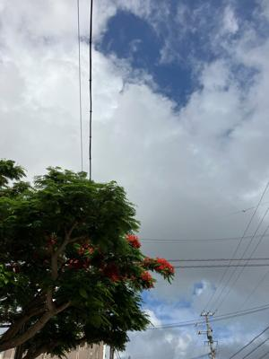
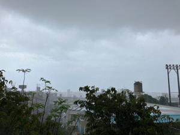

うるがいの話 ある日
最新: UiPathStudioX基礎コースlessson10動きません！【うるがいの話 ある日】とは 一日だけのプログです
『うるがいの話』の最新一日だけのプログで、通信料が少なく経済的だ。カニの画像をクリックすると全ての日付が載る『うるがいの話』サイトを表示します
|
|
【うるがいの話】 うるがい(ｳﾙｶﾞｲ urugai)とは、『もずくがに』の名前でとても大きくなります。 |
|---|---|
|
|
【カミマヤーの話】 猫のことを方言でマヤーといいます。カミマヤー（kamimayaa）とは、神の猫のことです。 |
|
【たながぁの音楽】 たながぁ（ﾀﾅｶﾞｰ tanagaa）とは手長えびのことで、何種類かあり大きいのは車 エビぐらいになります。 |

|
【ぶながぁの話】 ぶながぁ(ﾌﾞﾅｶﾞｰ bunagaa)とは、赤い髪の毛、赤い身体、そして身長は１ｍ２０ｃｍ ぐらい、川の蟹を食べているの目撃された。場所は沖縄県国頭郡大宜味村のと ある村僕の隣近所に住んでいる爺さんから、聞いた話です。 |
|
|
【ギーマの話】 ギーマ(giima)とは、山原の里山に咲くスズランに似た、 花を付けます。実は食べられます、 気が付くと口の周りが紫になっています。 |
2023年06月12日 (月）UiPathStudioX基礎コースlessson10動きません！
15:58
 
システム UiPath フォーラム ロボット
6月11日
ちょっと、そこ。あなたが読書に忙しいようですが、それは素晴らしいことな
ので、信頼レベルを 1 つ上げました。
私たちと一緒に時間を過ごしてくれて本当にうれしいです。あなたのことをも
っと知りたいと思っています。少し時間をとってプロフィールを記入するか、
お気軽に新しいトピックを始めてください。
返信するには、「メッセージ」にアクセスするか、このメールに返信してくだ
さい。
飛び込んできたメール（英語）を翻訳文です。『ちょっと、そこ。』、ドキ、
なんなんだ？、もとは『Ｈｅｙ ｔｈｅｒｅ』。フムフム、なんでこう言うメ
ールが飛んで来るのか、４時間のアカデミーコースを延々とここ数日、サイト
でウロウロしているからである。だって、研修の動画が説明どおり、操作して
も動かない！から。ＳｔｕｄｉｏＸ 基礎コース（ｖ２０１９．１０）とある
ように、頻繁にアップデートする最新のアプリに対応していないのである（単
純にミスもあるが）。ネットでも検索しても、解答がないのである。一応、解
決さくが分かったので、プログのどこかでアップしようと思う。その関係で
UiPath Community Forumを覗いたら
gorby
こんにちは。Application Cardのオープン動作、クローズ動作について教えて
ください。
職場の先輩から、
ブラウザ操作の場合、オープン動作=Never、クローズ動作=Never、
既に開いているExcelを再度開こうとして例外を発生させる場合、オープン
動作=Always、クローズ動作=Always、
の設定が良いと教わりましたが、理由が分かりません。
分かる方、解説をお願いいたします。
↓回答例
Yoichi
MVP 2023
gorby
Jan 23
こんにちは
基本的は以下の動作を把握して、状況に応じて使い分けます。
オープン動作
・・・・・
（とても長いので割愛）
↓この回答に対する反応
理解できませんでした ５ ←正直！！
１５時４７分 ビットコインの総資産 ￥１０、４７６（↑１７）